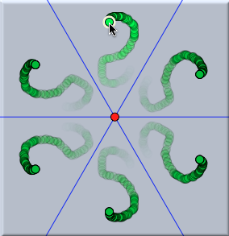
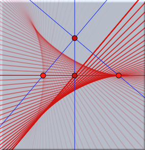

足跡、矢線、レンダリング
外観を設定するための第２の重要な情報ブロックが、ボタン にあります。 このブロックでは、足跡と矢線の設定をします。
足跡
点や線を動かしたときの足跡を残すことができます。このインスペクタブロックは次のようになっています。
これらのコントロールの大部分は「足跡」に関連します。足跡は
Cinderella.2での小さな拡張の一つです。
any オブジェクトの足跡でも描くことができます。足跡は次第に薄くなり、結果としてダイナミックな印象を残します。次の図で２種類の足跡を示します。最初の図は、組み合わせた鏡に反射してできる6つの点の足跡です。２番目の図は、アニメーションの途中にできる直線の跡です。
 | |
 |
| 鏡に反射する点の足跡 | |
直線のアニメーションの跡 | |
足跡を残すには、目的の要素を選んで、 "足跡を描く" チェックボックスをチェックします。
"足跡の長さ" は残しておく足跡の数をコントロールします。性能上の理由で、この数は1000より大きくはできません。
通常、足跡は動いているすべての図で描きます。しかし、 "足跡の間隔" パラメータで
n 番目の足跡だけを描くようにできます。これは、アニメーションがゆっくりしているときに役に立ちます。
最後に、"足跡の大きさの変化" では、足跡の大きさを次第に小さくすることができます。
矢線
線分は矢線にすることができます。矢線の外観はこのインスペクタブロックで変更できます。線分が選ばれると、インスペクタウィンドウには次のコントロールが追加されます。
矢線の設定は、外観の設定と似ています。それは現在選択されている線分に適用されます。 線分のどちらの端点にでも矢印をつけることができ、4種類が用意されています。２つのスライダーは矢印の大きさと位置を設定します。
レンダリング
"レンダリング" と呼ばれている一つのチェックボックスもあります。このボックスがチェックされていると、
CindyLab でのバネが、いかにもバネらしいぎざぎざの線で描かれます。さらに、このチェックボックスは、手書きモードで描かれた点と線が、手書きのままの図で表示されるかどうかを決定します。